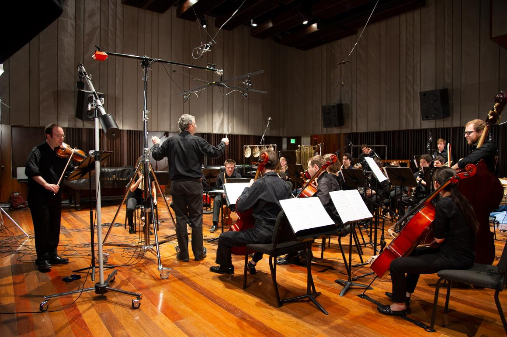
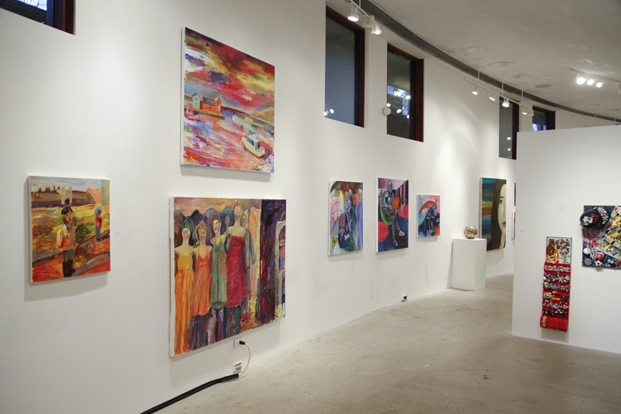
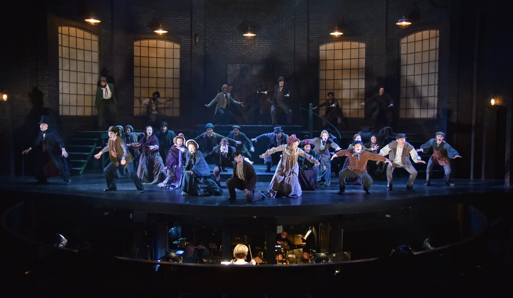
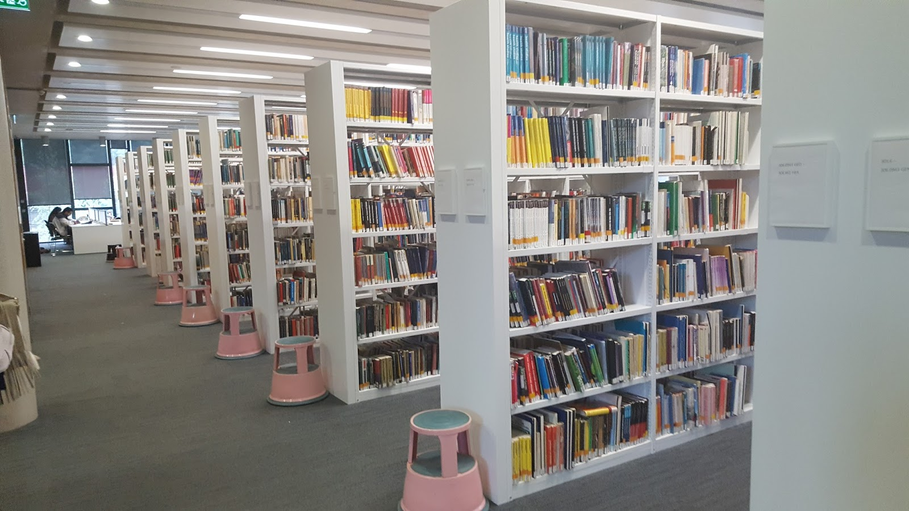

Arts
Creative University nurtures creativity in all its forms — be it art, music, drama, or dance.
The university arts calendar features hundreds of exhibits and performances throughout the academic year, as well as events celebrating the diverse cultures on campus. Learn more about the opportunities for artistic and cultural enrichment at Creative.
School of Music Concerts
With more than 200 concerts each year, we're sure there's something for you. At the Creative School of Music, concertgoers can experience virtuosic student, faculty, and guest artist recitals; orchestral, choral, and operatic productions; internationally renowned chamber ensembles; and more. Many performances are free and live streamed.
Museums & Galleries
Chances are you will learn something new every time you enter Creative’s world-class museums and galleries — all of them open to the public, almost all of them free of charge.
Lion Repertory Theater
Take a seat and watch the action unfold onstage at our Tony Award-winning professional theater.
Libraries
You’ll discover more than books in our libraries. They also sponsor exhibits, talks, and concerts.